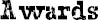

I LIKED MR. TUSHMAN’S speech, but I have to admit: I kind of zoned out a little during some of the other speeches.
I tuned in again as Ms. Rubin started reading off the names of the kids who’d made the High Honor Roll because we were supposed to stand up when our names were called. So I waited and listened for my name as she went down the list alphabetically. Reid Kingsley. Maya Markowitz. August Pullman. I stood up. Then when she finished reading off the names, she asked us all to face the audience and take a bow, and everyone applauded.
I had no idea where in that huge crowd my parents might be sitting. All I could see were the flashes of light from people taking photos and parents waving at their kids. I pictured Mom waving at me from somewhere even though I couldn’t see her.
Then Mr. Tushman came back to the podium to present the medals for academic excellence, and Jack was right: Ximena Chin won the gold medal for “overall academic excellence in the fifth grade.” Charlotte won the silver. Charlotte also won a gold medal for music. Amos won the medal for overall excellence in sports, which I was really happy about because, ever since the nature retreat, I considered Amos to be like one of my best friends in school. But I was really, really thrilled when Mr. Tushman called out Summer’s name for the gold medal in creative writing. I saw Summer put her hand over her mouth when her name was called, and when she walked up onto the stage, I yelled: “Woo-hoo, Summer!” as loudly as I could, though I don’t think she heard me.
After the last name was called, all the kids who’d just won awards stood next to each other onstage, and Mr. Tushman said to the audience: “Ladies and gentlemen, I am very honored to present to you this year’s Beecher Prep School scholastic achievers. Congratulations to all of you!”
I applauded as the kids onstage bowed. I was so happy for Summer.
“The final award this morning,” said Mr. Tushman, after the kids onstage had returned to their seats, “is the Henry Ward Beecher medal to honor students who have been notable or exemplary in certain areas throughout the school year. Typically, this medal has been our way of acknowledging volunteerism or service to the school.”
I immediately figured Charlotte would get this medal because she organized the coat drive this year, so I kind of zoned out a bit again. I looked at my watch: 10:56. I was getting hungry for lunch already.
“… Henry Ward Beecher was, of course, the nineteenth-century abolitionist—and fiery sermonizer for human rights—after whom this school was named,” Mr. Tushman was saying when I started paying attention again.
“While reading up on his life in preparation for this award, I came upon a passage that he wrote that seemed particularly consistent with the themes I touched on earlier, themes I’ve been ruminating upon all year long. Not just the nature of kindness, but the nature of one’s kindness. The power of one’s friendship. The test of one’s character. The strength of one’s courage—”
And here the weirdest thing happened: Mr. Tushman’s voice cracked a bit, like he got all choked up. He actually cleared his throat and took a big sip of water. I started paying attention, for real now, to what he was saying.
“The strength of one’s courage,” he repeated quietly, nodding and smiling. He held up his right hand like he was counting off. “Courage. Kindness. Friendship. Character. These are the qualities that define us as human beings, and propel us, on occasion, to greatness. And this is what the Henry Ward Beecher medal is about: recognizing greatness.
“But how do we do that? How do we measure something like greatness? Again, there’s no yardstick for that kind of thing. How do we even define it? Well, Beecher actually had an answer for that.”
He put his reading glasses on again, leafed through a book, and started to read. “‘Greatness,’ wrote Beecher, ‘lies not in being strong, but in the right using of strength. … He is the greatest whose strength carries up the most hearts …’”
And again, out of the blue, he got all choked up. He put his two index fingers over his mouth for a second before continuing.
“‘He is the greatest,’” he finally continued, “‘whose strength carries up the most hearts by the attraction of his own.’ Without further ado, this year I am very proud to award the Henry Ward Beecher medal to the student whose quiet strength has carried up the most hearts.
“So will August Pullman please come up here to receive this award?”